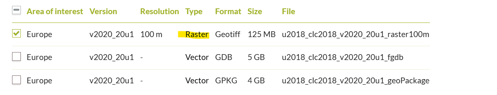

Data Sources and Supply Chain#
Warning
The data pipeline is under active development. This documentation will be updated as more regional studies are completed and new data sources are integrated.
Overview#
The RESource data supply chain integrates multiple global and regional data sources to support comprehensive renewable energy resource assessment and energy system modeling. The system prioritizes global data sources for consistency and scalability, with local government data sources used where global alternatives are unavailable or insufficient.
This documentation provides comprehensive information about each data source, including licensing requirements, access methods, data characteristics, and integration procedures. All use cases described are specific to renewable energy resource assessment and energy system analysis within the RESource framework.
Data Source Categories#
The RESource system integrates data across several key categories:
Power System Infrastructure: Existing generation facilities, transmission networks, and grid connectivity data
Climate and Weather: Meteorological data for renewable resource characterization and energy system modeling
Geospatial and Administrative: Boundaries, land use constraints, and geographic reference data
Land Constraints: Protected areas, terrain limitations, and development exclusions
Technology and Economics: Cost data, performance parameters, and technology specifications
Demographics and Demand: Population data and energy demand characteristics
currently not configured in the public version. Features under active development.
Access Methods#
Data sources employ various access mechanisms:
API Access: Automated retrieval with authentication and caching
Direct Download: HTTP-based file downloads with local storage
Manual Processing: Interactive portals requiring user input
Third-party Services: Integration through specialized libraries and tools
Tip
Need Help? Encountered Issues?
If you experience technical difficulties, workflow failures, or data pipeline breakdowns while using RESource:
Check the Documentation: Review the specific data source instructions and configuration examples
GitHub Issues: Report bugs, request features, or seek help at RESource Issues
Contact Developers: Reach out to the development team for technical support and troubleshooting assistance
Community Support: Join discussions and share experiences with other RESource users
Common Issues:
API authentication failures
Network connectivity problems
Configuration file errors
Missing dependencies or environment setup
Data format compatibility issues
Developer(s) actively monitors issues and provides support for data pipeline integration challenges.
1. Power System Infrastructure Data#
1.1 CODERS (Canadian Open Data Exchange for Renewable Energy Systems)#
Exclusively for Canadian studies
Tip
RESource uses the coders module to access CODERS API data. Explore existing API endpoints and extend the module with custom methods to fit specific research needs.
🏷️ Tag: Local (Canada)
📄 License: Open data license with attribution required. Subjected to End-user License Agreement (EULA). Academic and research use permitted. Check if tables are marked as 'Proprietary' or 'restricted'.
Attribution: "Data source: CODERS (Canadian Open Data Exchange for Renewable Energy Systems), SESIT Lab"
🏛️ Authority: Sustainable Energy Systems Integration & Transitions (SESIT) Lab, University of Victoria, Canada
📊 Data: CODERS dashboard and CODERS API Documentation
🔍 Resolution: Individual facility-level data for power system infrastructure across Canada
📝 Description: CODERS provides comprehensive Canadian power system infrastructure data including power generation facilities (existing and planned), transmission substations, transmission lines, and regional power system characteristics. The database contains both current and historical power system data with geographic coordinates, capacity information, technology specifications, and operational parameters. Data is available at provincial and national scales, supporting detailed power system analysis and renewable energy integration studies.
🎯 Use-case:
Power System Infrastructure Analysis: Existing generator locations, capacities, and technology types for baseline power system modeling
Transmission Network Mapping: Substation locations and transmission line routes for grid connectivity analysis
Regional Energy Assessment: Provincial power system characteristics and capacity for regional energy planning
Renewable Integration Studies: Baseline power system data for evaluating renewable energy integration potential Available data tables include: generators, substations, transmission_lines, hydro_existing, wind_generators, forecasted_annual_demand
⚙️ Supply_chain_mode: API-based data retrieval with local caching
📋 Instruction:
API Key Setup: Create
coders_api.yamlconfig file with the structure below:
Default_user: <your_username> api_keys: <your_username>: <your_api_key> <other_user1>: <other_api_key1> <other_user2>: <other_api_key2> # Additional users as needed
File Storage: Save the API config file at directory:
data/downloaded_data/CODERS/coders_api.yamlAPI Access: Contact CODERS team to request API access keys for your research
Data Retrieval: The system automatically:
Fetches data from CODERS API using authenticated requests
Caches data locally in pickle format for improved performance
Filters data by province/region as configured
Converts tabular data to GeoDataFrames when geographic coordinates are available
Available Data Sources:
cef: Canadian Energy Facts data tablescoders: Core power system infrastructure tables
Example Usage: The system provides methods to:
List available tables:
show_list('coders')orshow_list('cef')Retrieve national data:
get_table_canada('generators')Filter provincial data:
get_table_provincial('substations')Force data refresh:
force_update=Trueparameter
2. Climate and Weather Data#
2.1 ERA5 (ECMWF Reanalysis v5)#
🏷️ Tag: Global
🏛️ Authority: Copernicus Climate Change Service (C3S), ECMWF, EU.
📄 License: free of charge, worldwide, non-exclusive, royalty free and perpetual.
Caution: have to mention the attribution regarding C3S.
📝 Description: Solar influx, wind speed (vertical components at 100m), land elevation (heights) time-series data for weather years.
🔍 Resolution: hourly time-series for .25 arc degree (~ 30km) grids.
🎯 Use-case:
A cutout is one of the basis for this work and associated calculations.
We are using atlite to create the cutout and also to download the ERA5 data for the cutout. The cutout will be saved as a NetCDF (.nc) file. NetCDF is a file format often used for storing large scientific data sets that often involves time-series data, especially in the fields of climate and weather research. Please check this resource for more about cutout preparation and customization.
In this analysis, we are downloading ERA5 data on-demand for a specified region e.g. BC region cutout . But atlite does also work with other data sources e.g. SARAH-2 for high resolution solar dataset.
NREL has higher spatio-temporal dataset for renewable resources but does not cover complete global regions. Atlite currently does not support NREL's NSDRB for solar or WRDB for wind. Users can follow this thread for updates.
Atlite does not support ERA5 forecast data yet. Users can follow this thread for updates
Please go through this documentation and example usage of cutout to learn further.
⚙️ Supply_chain_mode: Automated via cdsapi (current version is cds-beta)
Note: From Sep 26, 2024 onwards the ERA5 dataset will only be supplied via cds-beta or ads-beta (source)
Before the data can be downloaded from ERA5, it has to be processed by CDS servers, this might take a while depending on the volume of data requested. This only works if you have in before
For linux users, please proceed as follows:
Steps to install the Copernicus Climate Data Store cdsapi package at your local Linux/WSL (sourced from > Registered and setup your CDS API key as described)
step1: Setup the CDS API personal access token
step2: Install the CDS API client.Note: atlite currently supports cdsapi <=0.7.2
Now your datapipeline to create the ERA5 Cutout is set.
3. Geospatial and Administrative Data#
3.1 GADM (Global Administrative Areas)#
🏷️ Tag: Global
This data could be sourced locally as well e.g for Canada from Canadian open-dataset
Other global data sources :
OpenstreetMap via pyrosm library.
World Administrative Boundaries - Countries and Territories by opendatasoft (https://public.opendatasoft.com/explore/dataset/world-administrative-boundaries/export)
📄 License: freely available for academic use and other non-commercial use
🏛️ Authority: University of Berkeley, Museum of Vertebrate Zoology and the International Rice Research Institute (2012)
📝 Description: GADM, the Database of Global Administrative Areas, is a high-resolution database of country administrative areas, with a goal of "all countries, at all levels, at any time period.
🎯 Use-case: This boundary has been processed for admin level 2 (i.e. sub-provincial) to extract geospatial boundaries of the Regional Districts (RD) e.g. 28 RDs inside BC, Canada. This boundary is primarily used for spatial-grid cell/point mapping, regional overlay visuals, clipping point of interests in regional level while clustering.
⚙️ Supply_chain_mode: Automated via pygadm library [supports GADM data V4.1]
3.2 CPCAD (Canadian Protected and Conserved Areas Database)#
Explicitly for Canadian Studies
🏷️ Tag: Local
GAEZ also has similar global data under Land Resources (LR) theme, raster data with 7 classes. We are using this data as a mandatory filter in the process. But the local (pan-Canadian) data has more detailed local government and indigenous protected areas' data. The user can control the classes of exclusion and also can use buffer around exclusion for both case.
📄 License: Data obtained through this application is distributed under the Canadian Open Government License.
In-short : worldwide, royalty-free, perpetual, non-exclusive licence to Copy, modify, publish, translate, adapt, distribute or otherwise use the Information in any medium, mode or format for any lawful purpose
🏛️ Authority: Environment and Climate Change Canada (ECCC)
📊 Data: Canadian Protected and Conserved Areas Database (CPCAD) | 2023-12-31
downloadble_source_url: https://data-donnees.az.ec.gc.ca/api/file?path=%2Fspecies%2Fprotectrestore%2Fcanadian-protected-conserved-areas-database%2FDatabases%2FProtectedConservedArea_2022.gdb.zip
🔍 Resolution: Spatial boundaries vector data
📝 Description: CPCAD is the authoritative source of data on protected and conserved areas in Canada. The database consists of the most up-to-date spatial and attribute data on marine and terrestrial protected areas in all governance categories recognized by the International Union for Conservation of Nature (IUCN), as well as other effective area-based conservation measures (OECMs, or conserved areas) across the country. Indigenous Protected and Conserved Areas (IPCAs) are also included if they are recognized as protected or conserved areas. CPCAD adheres to national reporting standards and is available to the public.
🎯 Use-case: These specific areas (raster cells/vectors) are excluded in analysis for site considerations. The modeller can also consider buffer around exclusion areas.
⚙️ Supply_chain_mode: Automated via specific url download. Has dependency on source_url.
4. Land Constraint and Suitability Data#
4.1 GAEZ (Global Agro-Ecological Zones)#
For global land constraint analysis
🏷️ Tag: Global
📄 License: The datasets are available under open access policy. Attribution required: "Source: FAO-GAEZ v4.0, 2021".
FAO Open Data License: Free use for any purpose, with attribution.
🏛️ Authority: Food and Agriculture Organization of the United Nations (FAO) and International Institute for Applied Systems Analysis (IIASA)
📊 Data: GAEZ v4.0 Land Resources (LR) Dataset
🔍 Resolution: 5 arc-minute (~10km at equator) and 30 arc-second (~1km at equator) grid resolution, global coverage
📝 Description: Global Agro-Ecological Zones (GAEZ) is a comprehensive global land resources assessment that provides spatial data on agricultural potential, land constraints, and ecological zones. GAEZ v4.0 includes multiple thematic layers such as terrain slope, land cover/use, exclusion areas (protected areas and biodiversity hotspots), and agro-climatic resources. The dataset uses consistent methodologies for global coverage and provides essential input for land suitability analysis.
🎯 Use-case: Used for land constraint analysis in renewable energy siting. The tool processes multiple GAEZ layers including:
Exclusion Areas (
exclusion_2017.tif): Protected areas and biodiversity zones to exclude from developmentTerrain Slope (
slpmed05.tif): Median slope classes for accessibility and installation feasibility analysisLand Cover (
faocmb_2010.tif): Dominant land cover/use types for compatibility assessment Different constraint classes are applied for solar vs wind development based on terrain and land use suitability requirements.
⚙️ Supply_chain_mode: Automated download and processing via ZIP archive
📋 Instruction:
The system automatically downloads the LR.zip file from FAO's data repository
Extracts required raster layers based on configuration settings
Clips rasters to regional boundaries for analysis
Generates visualization plots for each processed layer
Example configuration structure from
config/config_WB6.yaml:
GAEZ: root: 'data/downloaded_data/GAEZ' source: 'https://s3.eu-west-1.amazonaws.com/data.gaezdev.aws.fao.org/LR.zip' zip_file: 'LR.zip' Rasters_in_use_direct: 'Rasters_in_use' raster_types: # GAEZ v4 'exclusion' layer of protected areas and biodiversity values - name: 'exclusion_areas' raster: "exclusion_2017.tif" zip_extract_direct: 'LR/excl' color_map: 'OrRd' stepwise_plot_title: "Excluding Global Exclusion Areas" class_exclusion: solar: [ 2, 3, 4, 5, 6, 7 ] # Exclude protected areas, biodiversity zones, water wind: [ 2, 3, 4, 5, 6, 7 ] # GAEZ v4 Median slope class from SRTM data - name: 'terrain_resources' raster: "slpmed05.tif" zip_extract_direct: 'LR/ter' color_map: 'terrain' stepwise_plot_title: "Excluding Terrain Slope" class_exclusion: solar: [ 7, 8, 9 ] # Exclude high slopes (>30%) and water wind: [ 7, 8, 9 ]
4.2 CORINE Land Cover#
Explicitly recommended for EUROPEAN studies.
🏷️ Tag: European
📄 License: Data obtained through this application is distributed under the Copernicus Open Access Hub License. Free, full, and open access worldwide, royalty-free, non-exclusive license.
🏛️ Authority: European Environment Agency (EEA), Copernicus Land Monitoring Service
📊 Data: CORINE Land Cover 2018
🔍 Resolution: 100m raster resolution, 44 land cover classes
📝 Description: CORINE Land Cover (CLC) 2018 is a European land cover and land use mapping product based on the interpretation of satellite images. It provides consistent and thematically detailed information on land cover and land cover changes across Europe. The CLC uses a Minimum Mapping Unit (MMU) of 25 hectares for areal phenomena and a minimum width of 100 metres for linear phenomena. CLC 2018 is the most recent version, produced with 2018 as reference year.
🎯 Use-case: Used for land suitability analysis to identify suitable areas for renewable energy installations (solar and wind). The tool excludes unsuitable land cover classes and includes only appropriate land types for energy development. Different land cover classes are filtered for solar vs wind applications based on terrain and land use compatibility.
⚙️ Supply_chain_mode: Manual registration and download via API access
📋 Instruction:
Go to https://land.copernicus.eu/en/products/corine-land-cover/clc2018#download
Register to their portal for API access
Use the raster option to get the download URL
RESource currently supports raster processing (automated) for this dataset. However, users can define their custom methods to incorporate vector (GDB/GPKG) datasets to fit their purpose.

Update the
sourcekey in your configuration file (e.g.,config/config_WB6.yaml) with the obtained URLExample configuration structure from
config/config_WB6.yaml:
CORINE: root: 'data/downloaded_data/CORINE' raster_types: # list of dictionaries # CORINE Land Cover (CLC) 2018 raster data (100m resolution, 44 classes) - name: 'CORINE_land_cover' source: 'https://copernicus-fme.eea.europa.eu/fmedatadownload/results/13521.zip' #2024 version readme: 'https://eea.github.io/clms-api-docs/download.html#download-prepackaged-files' raster: 'U2018_CLC2018_V2020_20u1.tif' color_map: 'tab20' stepwise_plot_title: "Excluding not-Suitable CORINE Landcovers" class_inclusion: solar: [ 7, 8, 9, 31, 32, 38 ] wind: [ 7, 8, 12, 23, 18, 26, 27, 28, 29, 31, 32, 33 ]
You can also skip this configuration setup and download the file or use your customized area raster file. __If you already have a local raster__ (.tiff) file for your analysis, please drop the file at __'data/downloaded_data/CORINE'__ directory and update the 'raster' key with your local file name.
The class inclusion layers should match the layers available at your raster.
4.3 OSM (OpenStreetMap) Infrastructure Constraints#
For infrastructure and constraint mapping
🏷️ Tag: Global
📄 License: Open Database License (ODbL)
Attribution: "© OpenStreetMap contributors"
🏛️ Authority: OpenStreetMap Foundation and global contributor community
📊 Data: OpenStreetMap
🔍 Resolution: Vector data with individual feature precision
📝 Description: OpenStreetMap provides comprehensive, crowd-sourced geospatial data including infrastructure, land use, and constraint features. For renewable energy analysis, OSM data includes power infrastructure (transmission lines, substations, power plants), transportation networks (roads, railways, airports), and land use constraints. The data is continuously updated by a global community of contributors and provides detailed, current information on infrastructure and constraints.
🎯 Use-case:
Infrastructure constraint mapping: Airport buffer zones, power line corridors, transportation exclusions
Grid connection analysis: Existing substation and transmission line locations
Land use exclusions: Built-up areas, protected zones, infrastructure setbacks
Buffer zone creation: Automated buffer generation around constraint features
⚙️ Supply_chain_mode: API-based query using OSMnx library
📋 Instruction:
System queries OSM Overpass API for specific feature tags
Downloads vector data as GeoDataFrames
Caches data locally as GeoJSON files
Applies configured buffer distances for constraint analysis
Example configuration from
config/config_WB6.yaml:
OSM_data: root: 'data/downloaded_data/OSM' data_keys: aeroway: tags: [ 'aerodrome', 'runway', 'taxiway', 'helipad', 'apron', 'gate' ] power: tags: [ 'line', 'cable', 'substation', 'tower', 'generator', 'plant' ]
Note: RESource's gwa module handles the 'GWA_country_code' and replaces them with appropriate codes as configured under 'region mapping' key. Example of how GWA_country_code is configured :
region_mapping: 'AB': name: Alberta land_area_km2: 642,317 percentage_national_land_area: 7.1% timezone_convert: Etc/GMT-7 sub_region_mapping: {} GWA_country_code: CAN CRS_meters: EPSG:3577 'BC': name: British Columbia land_area_km2: 925,186 percentage_national_land_area: 10.4% timezone_convert: Etc/GMT+7 sub_region_mapping: {} GWA_country_code: CAN CRS_meters: EPSG:3005
5. Renewable Energy Resource Data#
5.1 GWA (Global Wind Atlas)#
For high-resolution wind resource analysis
🏷️ Tag: Global
📄 License: Creative Commons Attribution 4.0 International License (CC BY 4.0)
Attribution: "Global Wind Atlas 3.0, a free, web-based application developed, owned and operated by the Technical University of Denmark (DTU). The Global Wind Atlas 3.0 is released in partnership with the World Bank Group, utilizing data provided by Vortex, using funding provided by the Energy Sector Management Assistance Program (ESMAP)."
🏛️ Authority: Technical University of Denmark (DTU) in partnership with World Bank Group and Vortex
📊 Data: Global Wind Atlas
🔍 Resolution: 250m spatial resolution, annual and seasonal statistics
📝 Description: The Global Wind Atlas provides high-resolution wind resource data including wind speed, wind power density, and wind power class information. It offers detailed wind statistics at hub heights from 10m to 200m above ground level, capacity factors for different IEC wind turbine classes, and extreme wind conditions. The atlas combines mesoscale modeling with high-resolution terrain and roughness data to provide accurate wind resource estimates for wind energy development.
🎯 Use-case:
High-resolution wind resource mapping: Detailed wind speed and power density analysis at multiple hub heights
Wind turbine siting: Capacity factor estimates for different IEC turbine classes (IEC1, IEC2, IEC3)
Resource validation: Comparison with ERA5 data for resource assessment validation
Site-specific analysis: Fine-scale wind resource characterization for detailed feasibility studies
⚙️ Supply_chain_mode: Automated download of parquet/CSV files
📋 Instruction:
System downloads ATB parquet files from NREL data repository
Filters data by technology type (UtilityPV, LandbasedWind, etc.)
Extracts cost parameters and performance metrics
Exports processed cost data for LCOE calculations
Example configuration from
config/config_WB6.yaml:
NREL: ATB: root: 'data/downloaded_data/NREL/ATB' source: parquet: https://oedi-data-lake.s3.amazonaws.com/ATB/electricity/parquet/2024/v3.0.0/ATBe.parquet cost_params: capex: 'OCC' # Overnight Capital Cost fom: 'Fixed O&M'
5.2 NREL ATB (Annual Technology Baseline)#
For renewable energy technology cost and performance data
🏷️ Tag: Global
📄 License: Creative Commons Attribution 4.0 International License (CC BY 4.0)
Attribution: "National Renewable Energy Laboratory (NREL)"
🏛️ Authority: National Renewable Energy Laboratory (NREL), U.S. Department of Energy
📊 Data: NREL Annual Technology Baseline
🔍 Resolution: Technology-specific cost and performance data with annual projections
📝 Description: The Annual Technology Baseline (ATB) provides current and future cost and performance estimates for electricity generation, storage, and transportation technologies. ATB provides a consistent set of technology cost and performance data for energy analysis and is updated annually with the latest projections for renewable energy technologies including solar PV, wind, storage, and other generation technologies.
🎯 Use-case:
LCOE calculations: Technology-specific capital and operational cost data for economic analysis
Technology comparison: Standardized cost and performance metrics across different technologies
Future projections: Cost reduction scenarios and technology improvement trajectories
Investment analysis: Financial modeling inputs for renewable energy projects
⚙️ Supply_chain_mode: Automated download of parquet/CSV files
📋 Instruction:
System downloads ATB parquet files from NREL data repository
Filters data by technology type (UtilityPV, LandbasedWind, etc.)
Extracts cost parameters and performance metrics
Exports processed cost data for LCOE calculations
Example configuration from
config/config_WB6.yaml:
NREL: ATB: root: 'data/downloaded_data/NREL/ATB' source: parquet: https://oedi-data-lake.s3.amazonaws.com/ATB/electricity/parquet/2024/v3.0.0/ATBe.parquet cost_params: capex: 'OCC' # Overnight Capital Cost fom: 'Fixed O&M'
5.3 OEDB (Open Energy Database) Wind Turbine Library#
For wind turbine specifications and performance data
🏷️ Tag: Global
📄 License: Open Database License (ODbL) and various open licenses
Attribution: "Open Energy Platform (OEP), Reiner Lemoine Institut"
🏛️ Authority: Open Energy Platform, Reiner Lemoine Institut, Germany
📊 Data: Open Energy Database Wind Turbine Library
🔍 Resolution: Individual turbine model specifications
📝 Description: The Open Energy Database provides detailed technical specifications for wind turbine models including power curves, hub heights, rotor diameters, and performance characteristics. The wind turbine library contains manufacturer data for hundreds of turbine models with standardized technical parameters. This data supports detailed wind energy analysis by providing realistic turbine specifications for capacity factor calculations and energy yield modeling.
🎯 Use-case:
Turbine performance modeling: Power curves and capacity factor calculations
Technology selection: Comparison of turbine specifications for site-specific analysis
Yield optimization: Hub height and rotor diameter optimization for wind resources
Economic analysis: Turbine-specific cost and performance parameters
⚙️ Supply_chain_mode: API access and manual configuration files
Instruction:
System accesses OEDB API for turbine specifications
Downloads YAML configuration files for specific turbine models
Integrates turbine power curves with wind resource data
Example configuration from
config/config_WB6.yaml:
wind: turbines: OEDB: source: 'https://openenergy-platform.org/api/v0/schema/supply/tables/wind_turbine_library/rows' models: 1: name: 'GE2.75_120' ID: 116 P: 2.75 # Nominal Power (MW) config: 'data/downloaded_data/OEDB/3.2M114_NES.yaml'
6. Demographics and Demand Data#
6.1 CEEI (Community Energy and Emissions Inventory)#
Not required for the current public version. Required for features under active development.
🏷️ Tag: Local
📄 License: Data obtained through this application is distributed under the Canadian Open Government License.
🏛️ Authority: [Community Energy and Emissions Inventory(CEEI)]https://www2.gov.bc.ca/gov/content/environment/climate-change/data/ceei
📊 Data: CEEI data up to 2021
🔍 Resolution: Annual total for Regional Districts, for different sectors and different end-use demands.
📝 Description: The Community Energy and Emissions Inventory (CEEI) provides community-level greenhouse gas (GHG) emissions and energy consumption estimates for communities across BC. The data covers the buildings, municipal solid waste, and on-road transportation sectors for 161 municipalities, 28 regional districts, and 1 region (Stikine).
Buildings :The data is provided by utility companies and includes the amount of electricity and natural gas used by residential, commercial and some industrial buildings.
Transportation : Community-level data on greenhouse gas emissions from on-road transportation.
Waste : Estimates of community greenhouse gas emissions based on historic annual tonnes of waste disposed at regional district landfills.
More about data methods and inputs
🎯 Use-case: Used for load-center estimations on regional district level. Further used for Battery Energy Storage (BESS) size and required discharge hour estimation.
⚙️ Supply_chain_mode: Automated via specific url download. Check config file for specific url dependencies.
6.2 Population Data#
For Canadian studies (under development)
🏷️ Tag: Local
🏛️ Authority: Statistics Canada
📄 License: Data obtained through this application is distributed under the Canadian Open Government License.
In-short: worldwide, royalty-free, perpetual, non-exclusive licence to Copy, modify, publish, translate, adapt, distribute or otherwise use the Information in any medium, mode or format for any lawful purpose
📊 Data: Population projection 2021-2046
🔍 Resolution: Annual population for regional districts (sub-provincial).
📝 Description: Historical data up to 2023 and projection for 2024-2046.
🎯 Use-case: To mimic the load-centers in Canada at sub-provincial level (regional districts of province)
⚙️ Supply_chain_mode: Manual Download from the portal
📋 Instruction: Manually download from the portal with mentioned steps given in data_sources.yml
6.3 WorldPop#
For population density and demographic analysis (under development)
🏷️ Tag: Global
📄 License: Creative Commons Attribution 4.0 International License (CC BY 4.0)
Attribution: "WorldPop (www.worldpop.org - School of Geography and Environmental Science, University of Southampton)"
🏛️ Authority: WorldPop Research Group, University of Southampton
📊 Data: WorldPop Global Population Data
🔍 Resolution: 1km × 1km grid cells, annual estimates
📝 Description: WorldPop provides high-resolution, contemporary data on human population distributions. The dataset includes population count, population density, and demographic breakdowns at fine spatial scales. Data is produced using census data, satellite imagery, and geospatial datasets through machine learning approaches to create gridded population estimates that are more accurate than traditional administrative unit-based data.
🎯 Use-case:
Load center identification: Population-weighted demand center estimation for energy planning
Grid connection prioritization: Population density analysis for transmission planning
Environmental impact assessment: Population exposure analysis for renewable energy projects
Demand forecasting: Population-based electricity demand projections
⚙️ Supply_chain_mode: Direct download from WorldPop data portal
📋 Instruction:
System downloads ASCII XYZ or GeoJSON files from WorldPop servers
Processes population count and density layers
Clips data to regional boundaries
Example configuration from
config/config_WB6.yaml:
WorldPop: root: 'data/downloaded_data/WorldPop' source: population_density_CAN: 'https://data.worldpop.org/GIS/Population_Density/Global_2000_2020_1km_UNadj/2020/CAN/can_pd_2020_1km_UNadj_ASCII_XYZ.zip' population_count_CAN: 'https://data.worldpop.org/GIS/Population/Global_2000_2020_1km_UNadj/2020/CAN/can_ppp_2020_1km_UNadj_ASCII_XYZ.zip'
7. Legends and Color Coding Standardization#
The RESource system uses standardized legend files and color coding schemes to ensure consistent visualization across different raster datasets. These legend files are stored in the data/ directory and provide the mapping between raster class values, descriptions, and color representations.
7.1 Available Legend Files#
Currently the workflow does not have dependency for it. The post processing visualization uses these for color coding standardization.
The following standardized legend CSV files are available in the data/ directory:
1. CLC_2018_legend.csv#
Purpose: CORINE Land Cover 2018 class definitions and colors
Structure: 44 land cover classes with descriptions and hex color codes
Example classes:
Class 1: Continuous urban fabric (#e6004d)
Class 12: Non-irrigated arable land (#ffffa8)
Class 44: Salt marshes (#cccccc)
2. exclusion_2017_legend.csv#
Purpose: GAEZ exclusion areas (protected areas and biodiversity zones)
Structure: 7 exclusion classes with conservation status descriptions
Example classes:
Class 1: no exclusion (#b2df8a)
Class 2: IUCN category in WDPA (#fcae91)
Class 7: water (#66c2a5)
3. gaez_slpmed05_legend.csv#
Purpose: GAEZ terrain slope classifications
Structure: 9 slope classes from flat to high slope plus water
Example classes:
Class 1: flat (0-0.5%) (#edf8e9)
Class 8: high slope (>45%) (#a0092cff)
Class 9: Water (#66c2a5)
4. faocmb_2010_legend.csv#
Purpose: GAEZ land cover/use classifications
Structure: 11 dominant land cover types
Example classes:
Class 2: cropland (#62e660ff)
Class 4: forest/tree covered areas (#0a6304ff)
Class 11: water bodies (#6a3d9a)
5. CPCAD_legends.csv#
Purpose: Canadian Protected and Conserved Areas Database classifications
Structure: IUCN categories with conservation descriptions
Example classes:
National Park (#06c854ff)
Wilderness Area (#1f7c02ff)
OECM areas (#9467bd)
7.2 Legend File Structure#
All legend CSV files follow a consistent structure:
class: Integer class value matching raster pixel valuesdescription: Human-readable description of the classcolor: Hex color code for visualization (format: #RRGGBB or #RRGGBBAA with alpha)
Usage and Configuration#
Color Map Integration#
The system uses these legend files in two ways:
Matplotlib colormaps (specified in config files via
color_mapparameter):raster_types: - name: 'exclusion_areas' color_map: 'OrRd' # Standard matplotlib colormap
Custom legend-based colormaps (using CSV legend files):
# In visualization functions legend_df = pd.read_csv('data/exclusion_2017_legend.csv') custom_cmap = ListedColormap(legend_df['color'].tolist())
Data Version Harmonization#
⚠️ IMPORTANT: Legend files must be synchronized with the actual raster data versions to avoid visualization errors.
Requirements:
Legend class values must exactly match raster pixel values
Missing classes in legend files will cause visualization failures
Extra classes in legend files are acceptable (filtered automatically)
Color codes must be valid hex format
Version Control:
When updating raster datasets, verify class values match legend files
Update legend descriptions if class definitions change
Maintain consistent color schemes across related datasets
Customizing Colors#
Users can modify legend colors by editing the CSV files:
Edit legend file (e.g.,
data/CLC_2018_legend.csv):class,description,color 1,Continuous urban fabric,#your_new_color 2,Discontinuous urban fabric,#another_color
Validate hex colors: Ensure colors follow hex format (#RRGGBB or #RRGGBBAA)
Test visualization: Run visualization functions to verify color changes
Maintain consistency: Keep related datasets using compatible color schemes
Error Prevention#
Common issues and solutions:
Missing classes: Add missing class entries to legend files
Invalid hex codes: Verify color format (#RRGGBB or #RRGGBBAA)
Class mismatch: Ensure raster values exactly match legend class column
Encoding issues: Save CSV files with UTF-8 encoding
Best practices:
Backup original legend files before modifications
Use colorbrewer-compatible color schemes for accessibility
Test visualizations after legend changes
Document color scheme rationale for future reference